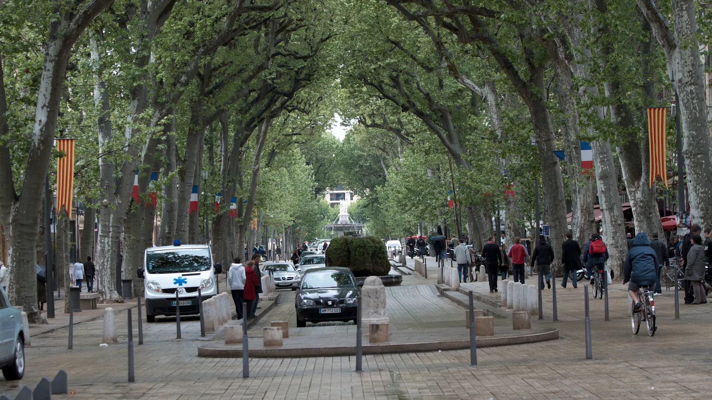

{kind=link}
관광·미술관
Nous avons déjà des billets.
이미 표가 있습니다.
누 자봉 데자 데 비예

1651년 옛 14세기 남쪽 성벽을 헐고 귀족들의 산책로로 조성한 길이 440m, 폭 42m의 기념비적인 대로다. 프랑스 대혁명의 영웅인 미라보 백작(Honoré-Gabriel Riqueti de Mirabeau)의 이름을 땄다.
하늘을 뒤덮는 거대한 플라타너스 가로수 터널 아래로, 햇볕이 잘 드는 북쪽에는 활기찬 야외 테라스 카페들이 줄지어 있고, 그늘진 남쪽에는 17~18세기 고등법원 법관과 귀족들이 지은 웅장한 오텔 파르티퀼리에(귀족 대저택)들이 자리 잡고 있어 '공적 무대(북쪽)'와 '사적 거주지(남쪽)'의 완벽한 비대칭 구조를 이룬다.
대로의 서쪽 로통드 거대 분수에서부터 동쪽 르네 왕의 분수까지 이어지는 4개의 역사적 분수는 물의 도시 엑상프로방스의 정체성을 오감으로 증명한다.
단순한 번화가가 아니라 엑상프로방스라는 도시의 성격과 계급 구조가 한눈에 읽히는 건축적 무대다. 서쪽 로통드 분수에서 동쪽 르네 왕 분수 방향으로 천천히 걸으며 남쪽 저택들의 아틀라스 조각 발코니를 감상하고, 이끼 낀 온천수 분수(Fontaine Moussue)의 미지근한 물에 손을 대어 본 뒤, 북쪽 골목으로 이어지는 비외 엑스로 진입하는 45~60분 산책이 엑상 여행의 가장 훌륭한 오리엔테이션이다.
| 운영시간 | 공공 가로 — 개방 시간 제한 없음(24시간). 화·목·토 오전 직물·공예·골동 노점 |
|---|---|
| 휴무 | 공공 가로 — 상시 개방, 휴무 없음 (Accès libre) |
| 예약 | 예약 불필요. 관광안내소 가이드 투어만 별도 예약 |
| 항목 | 상세 정보 |
|---|---|
| 위치 | Cours Mirabeau, 13100 Aix-en-Provence |
| 운영/요금 | 상시 개방 / 무료 (공공 대로) |
| 보행 팁 | 차량 통행이 제한적으로 허용되나 보행자 우선 구역. 서쪽 로통드 분수에서 동쪽 르네 왕 분수까지 편도 도보 약 7~8분 |
| 카페 이용 조언 | 쿠르 미라보 면한 메인 테라스는 자릿세가 높음. 가벼운 에스프레소 한 잔 분위기용으로 이용하고, 본격적인 식사는 북쪽 구시가지 골목(Place des Cardeurs 등) 권장 |
| 연계 주차 | Parking Rotonde (서쪽 진입) 또는 Parking Carnot (동쪽 진입) |
🌿 관찰 팁: Fontaine Moussue에 손을 대어 물의 온도를 느껴보세요. 라틴어 '아쿠아이(Aquae, 물)'에서 유래한 엑스(Aix)의 2천 년 온천 역사가 손끝에서 증명됩니다.
Nous avons déjà des billets.
이미 표가 있습니다.
누 자봉 데자 데 비예
On peut prendre des photos ?
사진 찍어도 되나요?
옹 푀 프랑드르 데 포토
Où commence la visite ?
관람은 어디서 시작하나요?
우 코망스 라 비지트

폴 세잔이 생의 마지막 4년(1902–1906) 동안 매일 그림을 그렸던 언덕 위 아틀리에. 북향 채광창, 대형 캔버스용 벽 슬릿, 정물화에 등장했던 올리브 단지와 해골이 그대로 보존된 근대 미술의 성지.

폴 세잔이 20세부터 60세까지 40년간 머물며 화가로 성장했던 가문의 여름 저택. 살롱의 초기 벽화, 마로니에 가로수길, 분수 연못, 그리고 화가가 최초로 생트 빅투아르 산을 그렸던 역사적 현장.

마르세유와 카시스 사이에 걸쳐 20km에 걸쳐 펼쳐진 유럽 유일의 지중해 연안 국립공원. 에메랄드빛 바다로 수직 낙하하는 백색 석회암 피오르 협만들의 장관.

엑상프로방스 건축물의 황금빛 사암을 공급하던 고대·중세 채석장. 직각으로 깎인 붉은 사암 절벽과 소나무 숲 사이에서 세잔이 큐비즘의 기하학적 구도를 태동시켰던 야외 작업장.

유럽 최고 높이의 해안 절벽 캅 카나유(Cap Canaille) 아래 자리한 아늑한 지중해 어항. 파스텔톤 가옥, 칼랑크 국립공원 유람선 출발지, 유서 깊은 카시스 화이트 와인(AOC Cassis)의 고향.

16세기 가죽 향장갑에서 출발해 500년 전통을 이어온 세계 향수 산업의 수도. 프라고나르(Fragonard) 유서 깊은 공장과 국제 향수 박물관이 자리한 프로방스 내륙 언덕 도시.